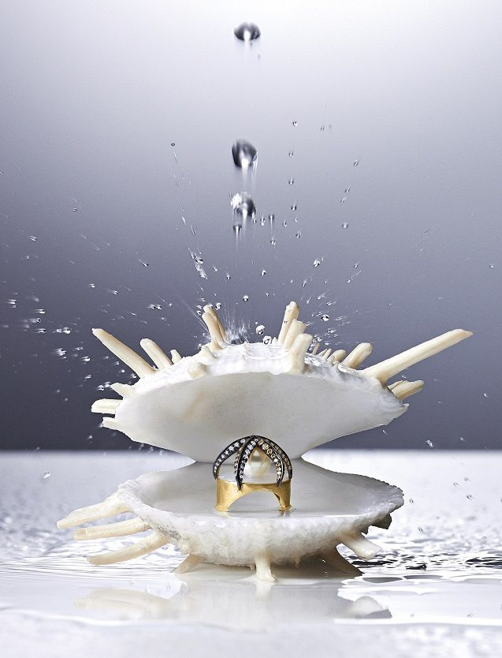

Jewelry pieces are a testament to the extraordinary beauty and craftsmanship found in the world of fine adornments. These exceptional treasures often feature gemstones of unparalleled quality, such as the elusive blue diamond or the coveted pink sapphire, each boasting unique characteristics that set them apart from more common varieties. Additionally, rare jewelry may include historic or antique pieces, imbued with a rich provenance that adds to their allure. Meticulously handcrafted by master artisans, these items showcase intricate designs and exceptional attention to detail, reflecting a level of artistry that is seldom seen in contemporary creations. Whether it's a one-of-a-kind vintage brooch, an heirloom necklace adorned with rare pearls, or a bespoke ring featuring an exotic gemstone, rare jewelry captivates collectors and connoisseurs alike, offering a glimpse into the extraordinary and the timeless.
Crafting jewelry is an intricate and artistic process that transforms raw materials into stunning adornments. It begins with a vision, a spark of creativity that is translated into a detailed design, often sketched by hand or rendered using computer software. Skilled artisans then select high-quality materials, such as precious metals and gemstones, ensuring that each element contributes to the overall beauty and durability of the piece. The journey continues with meticulous techniques such as casting, soldering, and setting stones, each requiring precision and expertise. Hammering, engraving, and polishing bring the design to life, adding texture and shine that highlight the artistry involved. Throughout this process, attention to detail is paramount, as even the slightest imperfection can affect the final outcome. The result is a piece of jewelry that not only showcases exquisite craftsmanship but also holds a unique story, capturing the essence of both the creator's inspiration and the wearer's individuality.